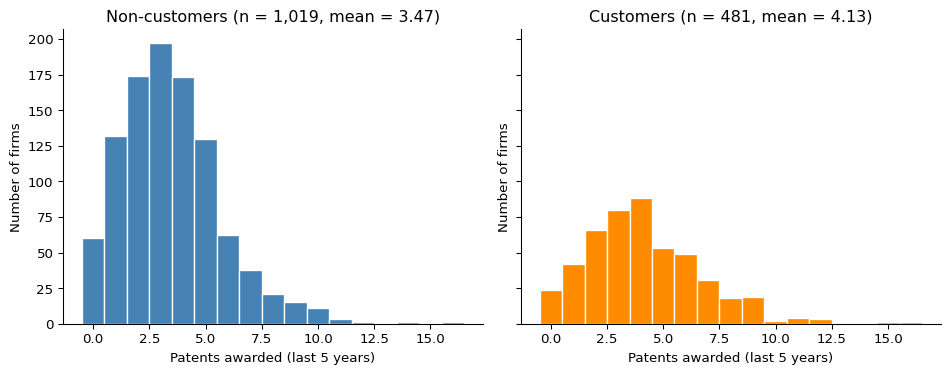
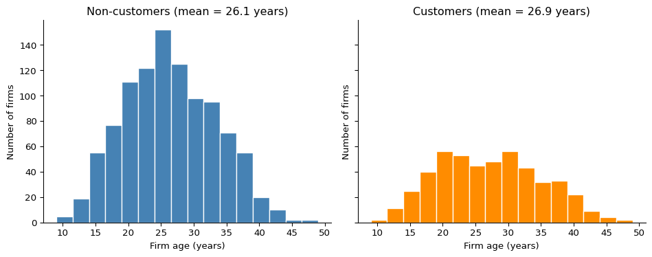
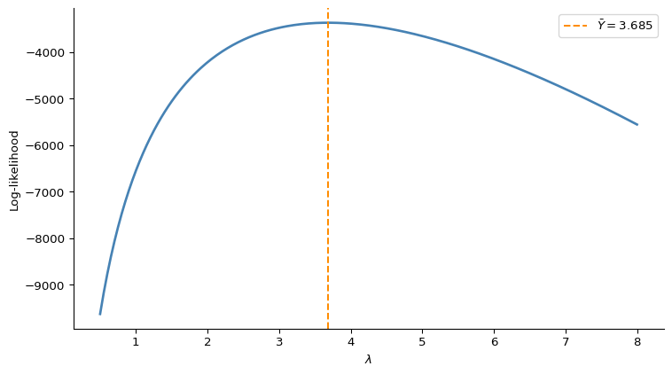

Poisson Regression and Maximum Likelihood Estimation
A Case Study of Blueprinty’s Software and Patent Awards
Author
Aidan Teeger
Published
May 17, 2026
Introduction
Blueprinty is a small firm that sells software to engineering firms preparing patent applications for the US Patent and Trademark Office. Their marketing team would like to claim that customers using the software are more successful at getting patents granted than firms that do not. The cleanest test of that claim would be a within-firm comparison, measuring each firm’s patent counts before and after adopting the software. No such data exists.
What Blueprinty does have is a cross-section of 1,500 mature engineering firms observed over a five-year window. For each firm we observe the number of patents awarded, the firm’s age, the region of the country it operates in, and whether or not it uses Blueprinty’s software. With only this snapshot, a raw comparison of average patent counts between customers and non-customers is not enough to settle the question. Customers are self-selected, so any unadjusted gap could simply reflect that the kinds of firms that buy the software are different in ways that also drive patent success. Older firms, firms in patent-heavy regions, or firms with deeper R&D pipelines might both be more likely to subscribe and more likely to file successful applications. The job of this post is to account for those background differences using a Poisson regression model fitted via maximum likelihood estimation, and isolate what we can plausibly attribute to the software itself.
Exploring the Data
We start by loading the data and looking at how patent counts, regions, and firm ages compare between customers and non-customers.
import pandas as pdimport numpy as npimport matplotlib.pyplot as pltfrom scipy import optimizefrom scipy.special import gammalnimport statsmodels.api as smdf = pd.read_csv("blueprinty.csv")df.head()
patents
region
age
iscustomer
0
0
Midwest
32.5
0
1
3
Southwest
37.5
0
2
4
Northwest
27.0
1
3
3
Northeast
24.5
0
4
3
Southwest
37.0
0
The figure below puts the distribution of patent counts for customers and non-customers side by side. Sharing the x-axis makes the comparison clean.

Figure 1: Distribution of patents awarded over the last 5 years, split by Blueprinty customer status.
n
mean
median
Status
Non-customer
1019
3.473
3.0
Customer
481
4.133
4.0
The shapes of the two distributions look broadly similar, but the customer distribution is shifted noticeably to the right. Customers average about 4.13 patents over the five-year window compared with 3.47 for non-customers, a raw gap of roughly 0.66 patents per firm. Taken at face value this looks like evidence in favour of the marketing claim, but it is exactly the comparison the introduction warned against. We need to check whether customers and non-customers look the same on other dimensions before treating this gap as causal.
The next two figures compare the distribution of regions and the distribution of firm age across the two groups.
Non-customers (%)
Customers (%)
Region
Midwest
18.4
7.7
Northeast
26.8
68.2
Northwest
15.5
6.0
South
15.3
7.3
Southwest
24.0
10.8
The regional pattern is striking. Customers are heavily concentrated in the Northeast, with about 68% of all customers located there compared with only 27% of non-customers. Every other region is sharply under-represented among customers. This is the most important confounder to keep in mind going forward. If the Northeast happens to be a high-patenting region for reasons unrelated to Blueprinty, that geographic concentration alone will inflate the raw customer mean.

Figure 2: Distribution of firm age (years since incorporation) by customer status.
Age looks broadly similar across the two groups. Customers are slightly older on average (about 26.9 years versus 26.1) and the customer distribution has a touch more dispersion, but the difference is small relative to the regional imbalance. Age is still worth controlling for because patent productivity is unlikely to be flat across the life of a firm. Mature firms tend to have more accumulated R&D capacity than very young firms, but very old firms can plateau or wind down. Anything resembling a hump-shaped relationship needs at least a quadratic term in age to be captured properly.
The takeaway from the exploration is that customers and non-customers do not look alike. A simple comparison of means will conflate Blueprinty’s effect with the regional and (to a smaller extent) age differences between the groups. We need a model that lets us hold those characteristics fixed.
A Simple Poisson Model via Maximum Likelihood
Patent counts are non-negative integers. Modelling them with a Normal distribution would put probability mass on negative and non-integer outcomes, neither of which is meaningful for a count of patents. The Poisson distribution is the natural starting point. It assigns probability only to non-negative integers and is governed by a single rate parameter \(\lambda\), which equals both the mean and the variance of the distribution.
Deriving the likelihood
Assume each firm’s patent count \(Y_i\) is an independent draw from the same Poisson distribution with rate \(\lambda\). The probability mass function is
The last term does not involve \(\lambda\), so it does not affect where the maximum is. Differentiating with respect to \(\lambda\) and setting the derivative to zero gives a clean closed-form answer,
We use gammaln(Y + 1) instead of log(Y!) because gammaln is numerically stable for any non-negative integer \(Y\). The two are equivalent since \(\log(Y!) = \log\Gamma(Y+1)\).
Plotting the log-likelihood as a function of \(\lambda\) over a sensible range gives a quick visual sanity check on where the maximum sits.
Y = df["patents"].values.astype(float)lam_grid = np.linspace(0.5, 8, 300)loglik_vals = [poisson_loglikelihood(l, Y) for l in lam_grid]fig, ax = plt.subplots(figsize=(8, 4.5))ax.plot(lam_grid, loglik_vals, color="steelblue", linewidth=2)ax.axvline(Y.mean(), color="darkorange", linestyle="--", linewidth=1.5, label=fr"$\bar Y = {Y.mean():.3f}$")ax.set_xlabel(r"$\lambda$")ax.set_ylabel("Log-likelihood")ax.legend()ax.spines[["top", "right"]].set_visible(False)plt.tight_layout()plt.show()

Figure 3: Log-likelihood of the simple Poisson model as a function of \(\lambda\), evaluated on the observed patent counts. The dashed line marks the sample mean.
The curve is smooth and concave, with a single peak. Reading the MLE off the plot is just a matter of finding the value of \(\lambda\) at which the curve is highest. That point sits right at the sample mean of the data (about 3.68), exactly as the derivation said it should.
Finding the MLE numerically
A closed-form solution is a luxury we won’t have once we extend the model to a regression. It’s worth confirming we can also recover the MLE by handing the log-likelihood to an optimizer.
The two estimates agree to six decimal places. They have to. The analytical derivation showed that \(\bar Y\) is the unique maximum of the log-likelihood for the simple Poisson model. The optimizer just finds the same answer through numerical search instead of calculus. Any tiny discrepancy is purely a function of the optimizer’s stopping tolerance.
Poisson Regression
The simple Poisson model assumes that every firm has the same patent rate \(\lambda\). That clearly does not fit our data. The exploration showed that customers, regions, and age groups produce different averages. The fix is to let \(\lambda\) depend on the firm’s characteristics through a regression structure,
The exponential link is doing real work here. The linear predictor \(X_i'\beta\) can take any value on the real line depending on the covariates and coefficients, but \(\lambda_i\) must be strictly positive to be a valid Poisson rate. Wrapping the linear predictor in \(\exp(\cdot)\) guarantees that constraint is satisfied automatically without putting any restrictions on the values \(\beta\) can take during estimation.
Plugging \(\lambda_i = \exp(X_i'\beta)\) into the Poisson log-likelihood, the per-firm contribution becomes
def poisson_regression_loglikelihood(beta, Y, X): eta = np.clip(X @ beta, -30, 30) lam = np.exp(eta)return (Y * eta - lam - gammaln(Y +1)).sum()
The np.clip step is a defensive measure. During optimization the optimizer may briefly try parameter values that produce extreme linear predictors, and exp of a large number quickly overflows to infinity. Capping \(\eta\) at a reasonable range avoids numerical blowups without changing the answer near the optimum, where the linear predictors are all moderate.
Building the design matrix
The design matrix \(X\) has 1,500 rows (one per firm) and 8 columns. The first column is a constant equal to 1 (the intercept), then age and age squared, then four region dummies, then the binary iscustomer indicator.
Two construction choices are worth flagging for the reader. First, we include both age and age squared. The reason was hinted at in the exploration. The relationship between firm age and patent productivity is not obviously linear. Very young firms have less accumulated capacity, very old firms can plateau, and the sweet spot may sit somewhere in the middle. Adding a quadratic term lets the model trace out a hump (or a bowl) instead of forcing a straight line.
Second, we drop one of the five region indicators. pd.get_dummies(..., drop_first=True) keeps four of the five regions, omitting Midwest. The omitted category is folded into the intercept and serves as the reference level. If we kept all five region dummies they would sum to the intercept column, creating perfect collinearity and making the design matrix singular. The interpretation does not change. Each region coefficient measures the log-rate of patenting relative to a Midwest firm with the same age and customer status.
Fitting via scipy.optimize.minimize
We hand the negative log-likelihood to scipy.optimize.minimize and ask for an approximation of the inverse Hessian along the way. The standard errors of the MLE come from the diagonal of the inverse of the Hessian of the negative log-likelihood, which is exactly the asymptotic variance of the maximum likelihood estimator. Because the optimizer’s internal Hessian approximation can be loose, we re-compute the Hessian by central differences on the analytic gradient at the optimum and invert that for a tighter answer.
The two sets of estimates agree to four decimal places on both the coefficients and the standard errors. Any residual difference would reflect the numerical precision of the Hessian approximation and is well within rounding. This confirms that the log-likelihood function and the optimization machinery are working correctly.
Interpreting the coefficients
Poisson regression coefficients are interpreted on the log-rate scale, so a coefficient of \(\beta_k\) means that a one-unit increase in \(X_k\) multiplies the expected patent count by \(\exp(\beta_k)\), holding the other covariates fixed.
The age and age_sq coefficients have opposite signs (positive on age, negative on age_sq), which produces the hump shape we anticipated. Patent productivity rises with firm age up to a point and then tapers off as firms mature.
The region coefficients are all small and most are statistically indistinguishable from zero relative to the Midwest reference category. Whatever regional differences exist are modest once age and customer status are controlled for.
The coefficient that the marketing team cares about is iscustomer. The estimate is 0.21 with a standard error of 0.031. That is roughly 6.7 standard errors away from zero, so the effect is precisely estimated and unlikely to be a fluke of sampling. On the rate scale, \(\exp(0.21) \approx 1.23\). Holding age and region fixed, Blueprinty’s customers are expected to produce about 23% more patents over a five-year window than otherwise comparable non-customers. The sign and magnitude both seem sensible. The effect is large enough to matter commercially but not so enormous that it strains credulity.
The Effect of Blueprinty’s Software
The 23% figure from the previous section is a relative effect on the rate. It is informative, but a marketing-facing answer often wants an absolute number. How many more patents does Blueprinty’s software add to a typical firm’s five-year haul? Because the model is multiplicative in \(\lambda\) rather than additive, the coefficient on iscustomer does not translate directly into “extra patents.” We need to do the translation through a counterfactual exercise.
The idea is straightforward. Take the fitted model, then for every firm in the sample compute two predictions: one assuming the firm is not a Blueprinty customer, and one assuming it is. Everything else (age, age squared, region) stays at the firm’s actual observed values. The difference between the two predictions, averaged across firms, is the model-implied average effect of subscribing.
cust_idx =list(X_df.columns).index("iscustomer")X_0 = X.copy()X_0[:, cust_idx] =0X_1 = X.copy()X_1[:, cust_idx] =1y_hat_0 = np.exp(X_0 @ beta_hat)y_hat_1 = np.exp(X_1 @ beta_hat)ate = (y_hat_1 - y_hat_0).mean()pd.DataFrame({"Quantity": ["Mean predicted patents if no firm were a customer","Mean predicted patents if every firm were a customer","Average effect of being a customer (patents per firm)","Relative uplift", ],"Value": [f"{y_hat_0.mean():.3f}",f"{y_hat_1.mean():.3f}",f"{ate:.3f}",f"{(y_hat_1.mean() / y_hat_0.mean() -1) *100:.1f}%", ],})
Quantity
Value
0
Mean predicted patents if no firm were a customer
3.436
1
Mean predicted patents if every firm were a cu...
4.229
2
Average effect of being a customer (patents pe...
0.793
3
Relative uplift
23.1%
Averaged across all 1,500 firms in the sample, switching the customer flag from 0 to 1 raises predicted patents over the five-year window from about 3.44 to about 4.23. That is an average lift of roughly 0.79 patents per firm, equivalent to the 23% relative uplift we read off the coefficient earlier.
What this analysis does and does not show
It is worth being precise about what this number means. The Poisson regression accounts for differences in firm age and regional location between customers and non-customers, both of which the exploration showed were nontrivial. After holding those characteristics fixed, customers still come out with a noticeably higher expected patent rate. That is genuine evidence in favour of Blueprinty’s marketing claim and the size of the effect (an extra 0.79 patents per firm on a base of 3.44) is commercially meaningful.
What the analysis does not establish is causation in the strict sense. This is an observational study, not a randomized experiment. Firms chose whether to subscribe to Blueprinty, and that choice may correlate with characteristics we do not observe. Firms with stronger in-house IP teams, more aggressive patent strategies, or deeper R&D budgets might both be more likely to buy specialised software and more likely to file successful patents. None of those traits are in the data, so the model cannot adjust for them. The 23% uplift should therefore be read as “the gap in expected patent counts between customers and otherwise similar non-customers in this sample,” not as “the gap that would be produced by randomly assigning the software.” The only way to settle the causal question cleanly would be a randomized trial in which a subset of firms were offered Blueprinty’s software and the rest were not, with neither group differing systematically beforehand.
With that caveat noted, the evidence here is consistent with Blueprinty’s marketing claim and rules out the most obvious confounders. That is a reasonable place to stop for a first cut.